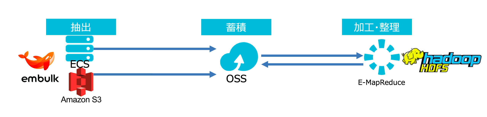

EnbulkからOSSへ
はじめに
本章はAlibabaCloud LogServiceを使ってOSSへデータを送ります。ゴールとしては以下のような構成図になります。 また、OSSにデータ収集後、E-MapReduceでHDFSへのETL処理がありますが、こちらは「OSSとE-MapReduce編」「ETL編」にて重複するため、割愛させていただきます。 （この章のゴールは外部データソースをOSSへ集約する、のみとなります）

Enbulk とは
Fluendはデータをストリーミングで収集するに対し、データをバッチで収集するツール。
並列データ転送ツール『Embulk』リリース！ http://frsyuki.hatenablog.com/entry/2015/02/16/080150
Enbulkの導入
ECSにEnbulkをインストールし、S3からOSSへデータを送ってみます。ECSはCentOS 7.6です。
注意したいこととして、embulkは近年出たばかりのツールで、2019/08/15現時点、AlibabaCloud OSSのInput/Outputプラグインは未開発状態です。ここではFTPを利用した方法で対処します。
Step1. javaのインストール EmbulkはJavaアプリケーションなので、Javaがインストールされていることを確認してください。
$ which javaもしJavaが入ってないのであれば、インストールしてください。
$ sudo yum install java-1.8.0-openjdkJavaが無事インストールされてることを確認します。
[root@metabase ~]# which java
/usr/bin/java
[root@metabase ~]# java -version
openjdk version "1.8.0_222"
OpenJDK Runtime Environment (build 1.8.0_222-b10)
OpenJDK 64-Bit Server VM (build 25.222-b10, mixed mode)
[root@metabase ~]# Step2. Embulkをダウンロードして配置します。
[root@metabase ~]# curl --create-dirs -o ~/.embulk/bin/embulk -L "https://dl.embulk.org/embulk-latest.jar"
% Total % Received % Xferd Average Speed Time Time Time Current
Dload Upload Total Spent Left Speed
0 0 0 0 0 0 0 0 --:--:-- --:--:-- --:--:-- 0
0 0 0 0 0 0 0 0 --:--:-- --:--:-- --:--:-- 0
0 0 0 607 0 0 661 0 --:--:-- --:--:-- --:--:-- 661
100 43.2M 100 43.2M 0 0 5902k 0 0:00:07 0:00:07 --:--:-- 9134k
[root@metabase ~]#
[root@metabase ~]# chmod +x ~/.embulk/bin/embulk
[root@metabase ~]# Step3. PATHを設定します。最後にembulk --versionでバージョンが表示されたらembulkインストール完了です。
[root@metabase ~]# export PATH="$HOME/.embulk/bin:$PATH"
[root@metabase ~]# source ~/.bashrc
[root@metabase ~]# embulk --version
embulk 0.9.18
[root@metabase ~]# Step4. embulkを実行するためのプラグインのインストール
出力元：ECSとしてをFTPのプラグインembulk-input-ftpをインストールします。
[root@metabase ~]# embulk gem install embulk-input-ftp
2019-08-17 10:10:43.668 +0800: Embulk v0.9.18
Gem plugin path is: /root/.embulk/lib/gems
Fetching: embulk-input-ftp-0.2.0.gem (100%)
Successfully installed embulk-input-ftp-0.2.0
1 gem installed
[root@metabase ~]# 出力元としてAWS S3でも可能です。その場合はembulk-input-s3をインストールする必要があります。
https://github.com/embulk/embulk-input-s3
[root@metabase ~]# embulk gem install embulk-input-s3
2019-08-17 10:22:11.376 +0800: Embulk v0.9.18
Gem plugin path is: /root/.embulk/lib/gems
Fetching: embulk-input-s3-0.3.4.gem (100%)
Successfully installed embulk-input-s3-0.3.4
1 gem installed
[root@metabase ~]# 出力先として、FTPプラグインをインストールします。
[root@metabase ~]# embulk gem install embulk-output-ftp
2019-08-17 10:36:06.656 +0800: Embulk v0.9.18
Gem plugin path is: /root/.embulk/lib/gems
Fetching: embulk-output-ftp-0.2.2.gem (100%)
Successfully installed embulk-output-ftp-0.2.2
1 gem installedStep5. embulkを実行するための設定ファイル作成 config.yamlファイルを作成します。今回はAWS S3からOSSへのデータ転送を目指します。
in:
type: s3
bucket:bigdata-sample
path_prefix:nyc-taxi/yellow_tripdata/csv
endpoint:s3.ap-northeast-1.amazonaws.com
auth_method: basic
access_key_id: [AWS Access Key]
secret_access_key: [AWS Secret Key]
parser:
type: csv
delimiter: "\t"
charset: UTF-8
newline: CRLF
null_string: 'NULL'
skip_header_lines: 0
comment_line_marker: '#'
allow_extra_columns: true
columns:
- {name: json_payload, type: string}
out:
type: ftp
host: oss://[accessKeyId:accessKeySecret@]bucket[oss-ap-northeast-1.aliyuncs.com]/object/path
port: 21
ssl: true
ssl_verify: false
path_prefix: /ftp/file/path/prefix
file_ext: csv参考：AlibabaCloud OSSのリージョンとエンドポイント
https://jp.alibabacloud.com/help/doc-detail/31837.htm
Step6. 上記の設定ファイルを引数にしつつembulkを実行します。
[root@metabase ~]# embulk run config.yaml
2019-08-17 11:58:34.152 +0800: Embulk v0.9.18
2019-08-17 11:58:34.883 +0800 [WARN] (main): DEPRECATION: JRuby org.jruby.embed.ScriptingContainer is directly injected.
2019-08-17 11:58:37.954 +0800 [INFO] (main): Gem's home and path are set by default: "/root/.embulk/lib/gems"
2019-08-17 11:58:37.969 +0800 [INFO] (main): Started Embulk v0.9.18
2019-08-17 11:58:37.981 +0800 [INFO] (0001:preview): Loaded plugin embulk-input-randomj (0.5.1)
2019-08-17 11:58:37.990 +0800 [INFO] (0001:preview): Loaded plugin embulk-filter-column (0.7.1)
〜 略 〜
これにより、AWS S3にあったcsvファイル集をOSSへ移植できてることを確認できました。


プラグインを作る方法
embulkは各自カスタムプラグインを作成することができます。著者はプラグインジェネレータを使ってaliyunOSS APIを利用したカスタマイズプラグインを作成、移植してみました。 ただ、csv以外のフォーマット(json、parquet）で失敗するため、もう少し詰めてからembulk pluginリストへアップロードしたいと思います。
AlibabaCloud OSS SDK for Java https://www.alibabacloud.com/help/doc-detail/32008.htm
参考
- github.com - embulk/embulk
- embulkのインストール・アップデート方法
- embulkのプラグインを作る
- Embulkってなに？ということから、Embulkのプラグインを開発するところまでをまとめたページ